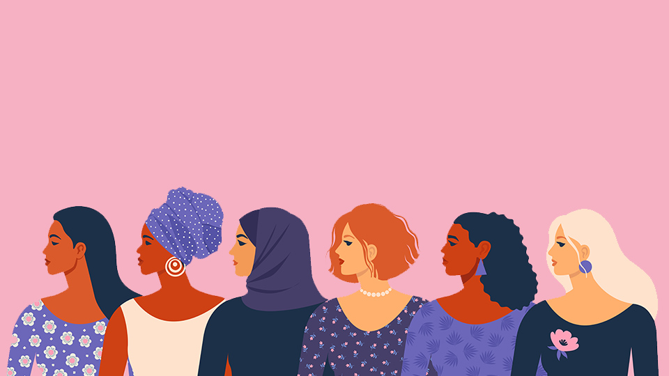

Safety
Measures
Actions to be Taken
1. Let girls’ and women’s voices get heard
- Most importantly, the #HearMeToo movement. Women and girls should be the at the centre of all design and delivery.
2. Connecting to those who know, who care
- When developing a programme, ensure that local women’s and youth organisations are consulted and further built on their best practices and evidence collected by them. And for the many men and boys involved in fighting against GBV, let’s work together.
3. Light the way
- All shelters, latrines, water points and pathways within camps must have ample lighting to reduce the risk of sexual violence.
4. Be non-apologetic about female-only safe spaces
- Most public spaces in emergencies are dominated by men. Women need a place where they can feel safe, report gender-based violence confidentially, receive support, and build their social network along with their confidence.
5. Make safe spaces mobile
- The most vulnerable women, married adolescents, adolescent mothers, and disabled women and girls can benefit from services brought to them.
6. Be aware of your surroundings. Don’t let your guard down
- If things seem even slightly unsafe, it is best to get out of that place immediately.
7. Trust yous instincts
- There will invariably be signs, however small or seemingly insignificant, that tell or alarm you that thing are not OK. You may not understand it or be able to analyse it consciously, but please do NOT ignore it. It is your personal threat alarm beeping
- Make it a habit to read and notice these warning signs and go with your intuition to quickly remove yourself from potentially unsafe situations.
8. Don’t take eve teasing lightly
- Respond with a stern voice.
- Threaten to take a picture which might scare them away.
- If the eve teasing still persists then immediately raise your voice to gather a crowd.
9. While driving a car:
- Avoid parking in desolate areas
- Look inside the car, especially the back seat before unlocking & entering
- Lock the doors immediately after entering the car
- Start the car & drive off immediately instead of calling someone. Calls can wait
- Don’t give lift to strangers
- Don’t stop your car for strangers, especially at night
- Take known routes, avoid short cuts which you don’t know.
10. While travelling at night don’t keep your phone in your hand
- Remember phone is the first thing your attacker will throw away
- Activate your speed dials which can be used to dial numbers in emergency
- Keep it in your pocket or at a place from where you can easily take it out & dial a number & leave it on
- Once the number has been dialed start shouting & try to tell your location so that the other person can inform the police about your location
- If you have a smart phone then install emergency apps which can send sms to known people & can even dial the police no. in case of emergency.